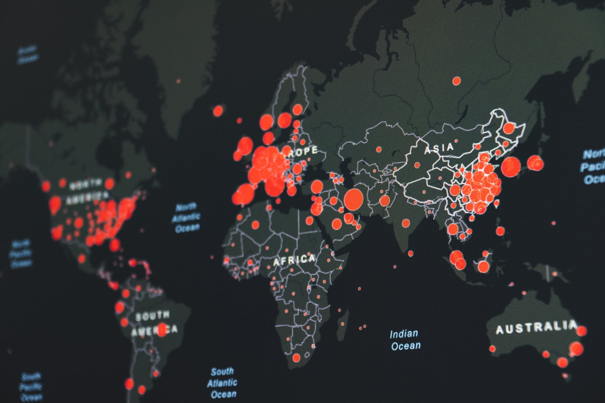
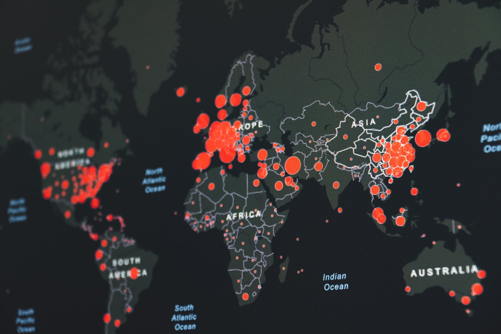

O corona vírus impactou o mundo inteiro. Afetou diretamente a vida de cada brasileiro. Provocando mudanças na economia, mercado de trabalho, na segurança alimentar,saúde e ensino publico trazendo consequências inestimáveis hoje.
Como esse problema está sendo abordado ?
A pandemia está sendo abordado de vários modos, pois afetou a economia de varios paises principalmente o Brasil. Apesar de esforços tardio, a vacinação adotada se mostrou bem sucedida,mesmo com o surgimento da variante omicron se percebeu que os não vacinados são a maioria dos casos graves de internação . O lockdown não está mais sendo adotado, mas o uso de máscaras em locais fechados e medidas de higiene como o uso de alcool são obrigatórios. A ajuda financeira dada no inicio da pandemia, que foi fundamental a famílias de baixa renda, não é mais adotada pelo governo o que deixou várias famílias em situação social precária principalmente com a economia tentando reagir, com alta do desemprego , inflação em alta , preços exorbitantes de alimentos e combustíveis.
Soluções no mundo
Nos paises desenvolvidos que adotaram o lockdown no inicio da pandemia já estão voltando a normalidade em suas vidas mesmo com o avanço da variante omicron, sabendo que seus efeitos são mais brandos a vacinação tem garantido uma certa normalidade.
Quem mais sofre ?
Todas as classes foram afetadas. Mas principalmente a classe da população vulneravel de baixa de renda. A pandemia provocou um aumento da pobreza e da desigualdade social e desemprego.
Na educação os estudantes do brasil, com o fechamento de escolas e faculdades tiveram consequencias nunca antes observadas em suas vidas academicas e que provocou impactos ate hoje sentidos. Poios foram obrigados a se adaptar a um novo modelo de ensino, Os de baixa renda foram mais afetados, sem acesso a internet e a falta de merenda, antes sua principal refeição, provocou uma queda no rendimento dos alunos, afetou sua nutrição, saúde mental em niveis alarmantes entre os jovens como nunca antes.
Solução
Campanhas digitais promovidas pelas autoridades governamentais e profissionais de saúde para conscientizar a população em geral da importância da vacinação e medidas de higiene, através de tv, radio e midias sociais, como facebook, instagram com propagandas e posts. A curto prazo punições legais aqueles que espalham desinformação já a a llongo prazo a aproximação da comunidade cientifica com a população em geral para assim cada brasileiro capaz de buscar suas informações em fontes confiáveis para conseguir desmentir informações falsas.
Referências
https://exame.com/brasil/um-ano-apos-o-inicio-da-pandemia-governo-cria-secretaria-da-covid/
https://www12.senado.leg.br/noticias/infomaterias/2020/08/desigualdade-e-abusos-na-pandemia-impulsionam-cobrancas-por-direitos-humanos
https://www.sanarmed.com/a-pandemia-esta-controlada-colunistas
https://g1.globo.com/mundo/noticia/2022/02/02/fim-da-pandemia-os-paises-que-retiram-restricoes-contra-covid-mesmo-com-casos-ainda-altos.ghtml
https://www.unicef.org/brazil/comunicados-de-imprensa/covid-19-extensao-da-perda-na-educacao-no-mundo-e-grave
https://www.unicef.org/media/111621/file/%20The%20State%20of%20the%
20Global%20Education%20Crisis.pdf%20.pdf
https://www.gov.br/inep/pt-br/assuntos/noticias/censo-escolar/divulgados-dados-sobre-impacto-da-pandemia-na-educacao
https://www.cepal.org/pt-br/comunicados/pandemia-provoca-aumento-niveis-pobreza-sem-precedentes-ultimas-decadas-tem-forte
https://www.gov.br/mcti/pt-br/acompanhe-o-mcti/noticias/2021/10/impactos-economicos-da-pandemia-no-brasil-poderao-ser-observados-ate-2045#:~:text=De%20acordo%20com%20o%20estudo,de%20sa%C3%BAde%
2C%20a%20qual%20foi
https://dotlib.com/blog/covid-19-impactos-da-pandemia-no-brasil
https://www.bio.fiocruz.br/index.php/br/noticias/1883-a-pandemia-da-desinformacao